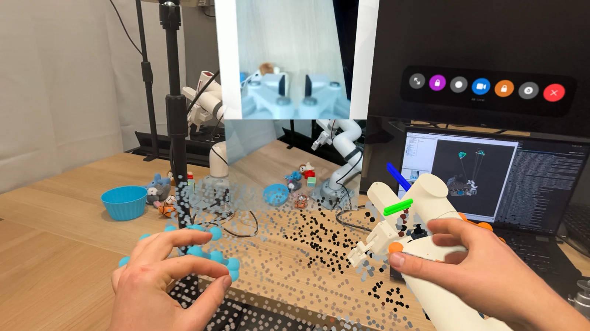
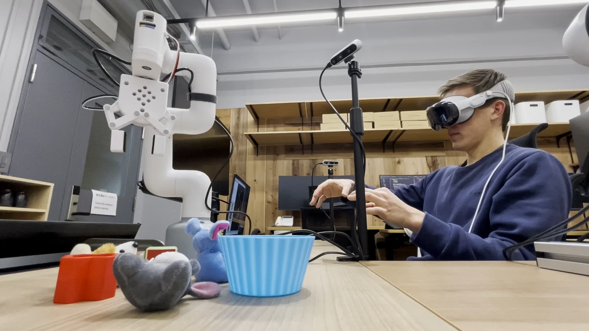
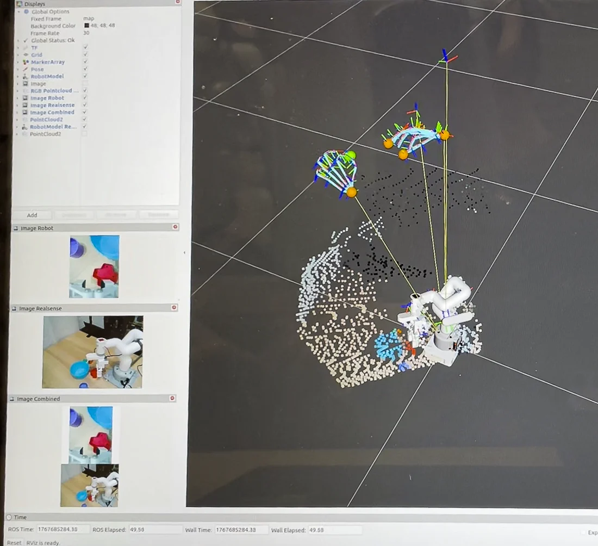

This project extends VisionProTeleop with a ROS 2 pipeline that maps Apple Vision Pro hand tracking to a physical MyCobot 280 while returning camera, point-cloud, audio, and MuJoCo feedback to the operator.
A short teleoperation highlight from the full demonstration.
01
Motivation
Good teleoperation demands continuous perceptual feedback and low-latency control mapping. This project presents an teleoperation architecture for cobots using the Apple Vision Pro and ROS 2. Demonstrating on a MyCobot 280, the system integrates hand/head tracking with low-latency stereo video pass-through and spatialized audio feedback to establish real-time operator telepresence. Furthermore, a synchronized 3D virtual representation of the robot is displayed within the spatial environment to act as a digital twin for trajectory monitoring and state visualization. The modular ROS 2 pipeline allows straightforward scaling to dual-arm and high-DoF manipulators.
02
System Overview
System architecture. Select the diagram to open the full-resolution version.
03
Main Features
Immersive 3D
Commanded pose and virtual robot in 3D
Custom made MuJoCo model of MyCobot 280 with camera and gripper which is streamed to the Vision Pro including the commanded and actual end-effector poses which significantly improves teleoepration and enables robot state visualization if the real robot is out of sight.
Robot control
MyCobot inverse kinematics
A C++ IK node maps the activated wrist frame to link 6, with hardware commands for arm joints, the adaptive gripper, and the LED.
Sensor feedback
Sensor data inside Vision Pro
Streams robot and RealSense cameras, downsampled RGB point clouds, and audio back to the headset.
Added app features
Teleoperation-focused interface
World locking for the camera and control bar, direct reset and exit actions, and a faster path into the tracking view.
04
Control Pipeline
1
Track
Vision Pro captures the operator's head, wrist, and finger poses.
2
Align
On activation, the human wrist is aligned with the robot end-effector frame for relative, intuitive control.
3
Solve
The ROS 2 inverse-kinematics node calculates a valid MyCobot joint target.
4
Execute
The hardware node sends joint, gripper, and status commands to the physical robot.
5
Feedback
Sensor data is streamed back to the Vision Pro for operator awareness.
05
Operator Feedback
Teleoperation is bidirectional: the headset sends motion intent and receives spatial context from the robot workspace. Each modality can be enabled in the ROS 2 launch configuration.
◉
Video
Robot-mounted and RealSense camera streams.
◉
Point cloud
Downsampled RGB geometry placed in the simulation frame.
◉
Virtual Robot
MuJoCo state rendered as a spatial reference in Vision Pro.
◉
Audio
Enable, disable, and motor-state feedback for the operator.
06
Demonstrations


Full teleoperation demonstration

ROS 2 transforms and tracking markers visualized in RViz.
07
Current limitations
The MyCobot Python API and its internal ESP32 communication limit physical command updates to approximately 12 Hz.
Camera and point-cloud quality must be balanced against local-network bandwidth and latency.
This is a project prototype for a specific robot configuration, not a robot-independent control framework.
08
Acknowledgements
This project is built on VisionProTeleop by Younghyo Park and Pulkit Agrawal at Improbable AI. This page describes the ROS 2, MyCobot 280, RealSense, and Tracking Streamer extensions developed by Ferdinand Hartmann; it does not claim authorship of the original VisionProTeleop ecosystem.